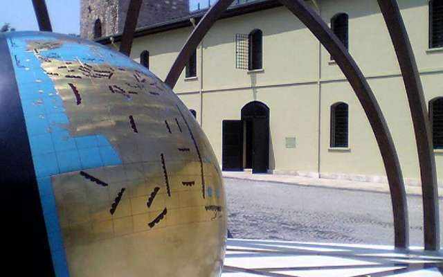

Bizans ve Osmanlı başkentinin katmanlarını keşfeden iki günlük bir İstanbul rotası: Sultanahmet çevresindeki müzelerden Galata'ya ve Boğaz kıyısındaki Rumeli Hisarı'na.
Gün 1

Ayasofya Tarih ve Deneyim Müzesi, Ayasofya'nın yaklaşık on beş asırlık hikâyesini dijital anlatım ve canlandırmalarla aktaran bir deneyim müzesidir.

Büyük Saray Mozaikleri Müzesi, Sultanahmet'teki Arasta Çarşısı'nın hemen altında, Bizans imparatorlarının yüzyıllarca yaşadığı Büyük Saray'dan geriye kalan en…

İstanbul Arkeoloji Müzeleri, Topkapı Sarayı'nın dış bahçesinde, Gülhane'de yer alan ve Osmanlı İmparatorluğu'nun ilk modern müzesi olarak kurulan bir müze kompleksidir.

Türk ve İslam Eserleri Müzesi, Sultanahmet Meydanı'nda, eski Hipodrom'un kenarında yükselen İbrahim Paşa Sarayı'nda yer alır.

İslam Bilim ve Teknoloji Tarihi Müzesi, Gülhane Parkı içinde, Topkapı Sarayı'nın eski ahır yapılarından birinde yer alır.
Gün 2

Galata Kulesi, İstanbul siluetinin en tanıdık simgelerinden biridir ve 14.

Galata Mevlevihanesi, 15.

Rumeli Hisarı, Boğaz'ın en dar noktalarından birinde, Fatih Sultan Mehmet'in İstanbul'un fethinden bir yıl önce, 1452'de yalnızca birkaç ay içinde inşa ettirdiği…

Kız Kulesi, Üsküdar açıklarında, Boğaz'ın Marmara'ya açıldığı noktada küçük bir kayalığın üzerinde yükselen ve İstanbul'un en romantik simgelerinden biri olan bir…
Gezinizi planlamanıza yardımcı olacak, gün gün düzenlenmiş hazır rotalar. Süreler yaklaşık değerlerdir; ziyaret saatlerini ve yol koşullarını yola çıkmadan önce kontrol edin.